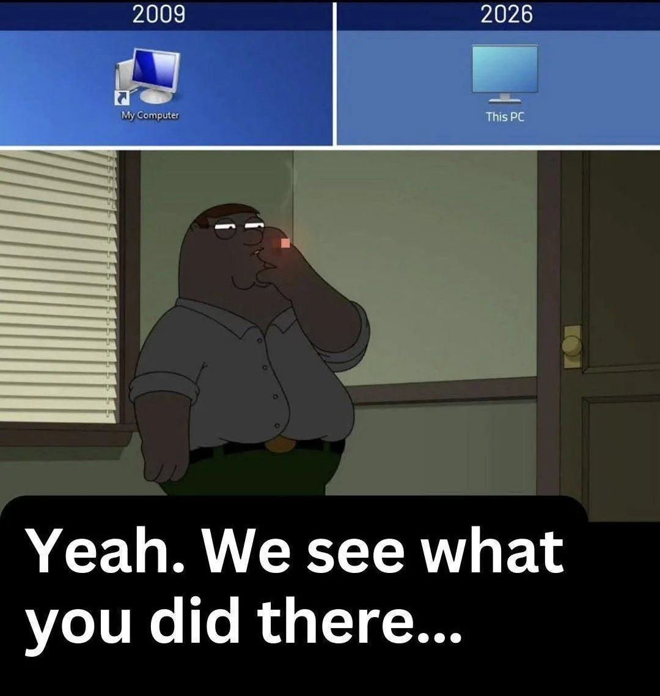
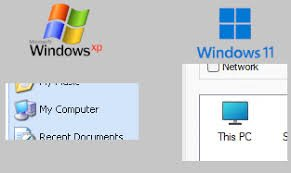

Whose computer is this, actually?

A small rename. A larger statement.
There's a small linguistic trick that Microsoft played on us all.
People say "my computer."
They mean the laptop on the desk in front of them.
Then a Windows update reboots. And it installs something Microsoft decided to have on your computer. Or IT pushes a new endpoint agent that eats 10% of the CPU. Or a manager asks for the BitLocker key and it turns out you don't have it. Or the company decides Copilot is now mandatory and the toggle is greyed out and it breaks every 5 prompts. (Legit, it happened to me.)
That's the moment the word my got got. It was always this computer. Not your computer. Specifically those corporation computers...
Microsoft, to their credit, has been honest about this for longer than most people realise. In Windows 8.1, back in 2013, they renamed the desktop icon from My Computer to This PC. Same icon. Same shortcut. One word swapped. The change shipped, nobody really noticed, and we all moved on. But the word matters. My implies ownership. This is just a pointer. (Ready for a subscription based product?) A pronoun for a thing in front of you that might belong to anyone.
It's a small detail. It's also been the truth for over a decade.
The middle ground
The Linux folks are already typing their replies... I have WSL. I've had Linux. I run Windows on this machine because the clients I work with run Windows.
What I'm trying to say is two things. And it goes to pair with the saying:
"Just because you do not take an interest in politics doesn't mean politics won't take an interest in you." Source.
First, I'm trying to say that your PC isn't yours anymore. And it's a lot of work to "harness it"... To remove the bloat and "improve" it to a working function. Most recent PCs/portable computers I open, when I execute a command it takes seconds for the program to launch. On my personal PC it's instant... because I've done the ground work to clear up the bloat, manually.
For example, the search bar in Windows has turned into a chaos, you cannot search like you used to. Use this when you want to find a file on your computer: Voidtools — Everything. It's the good old file search from 2000's XP.
Second, is when you can't have admin access, and you have to bypass it. It's the trick of using portable programs...
The trick of using a machine that isn't fully yours, without pretending it is. Which is most of us, most of the time. Even your "personal" laptop runs an OS made by a company that decided last week to take screenshots of your screen for AI training, and didn't ask first.
There's other solutions like USB bootable Linux drives etc... but let's not go down that rabbit hole.
How do you manage a PC that you can't install programs on?
Yes this is SEO bait. ;)
What can I do if the computer is not mine?
The middle ground has a name in old sysadmin circles. Portable applications.
What a portable app actually is
A portable application is a program that doesn't install. It lives in a folder. You double-click an .exe, it runs. It doesn't install; you delete it, it's gone. You close it, nothing is left behind. No registry entries it forgot to clean up, no scattered files in %APPDATA%, no service that keeps phoning home after you uninstalled the parent.
Copy the folder to a USB stick, plug into another machine, double-click. Same app. Same settings. No admin rights needed in most cases, because there's nothing to install in the first place.
If you came up in IT in the 2000s you remember this style. It was just how software worked before everyone decided installers needed to be 800 MB and request elevated privileges to add a clock widget.
MobaXterm, for example
The tool I reach for most often in this category is MobaXterm. SSH, RDP, VNC, SFTP, a built-in X server, a bash-style local terminal, all in one executable that runs from a USB stick without admin rights.
Is it the most beloved tool in the world? No. The Linux crowd has Tilix, the macOS people have iTerm2, the Windows Terminal + WSL2 combination has gotten genuinely good (I use both). I know. I've used most of them. MobaXterm wins for me in one specific scenario: I am on a machine I do not fully control, I need to connect to multiple servers across SSH and RDP, and I do not have time to fight with the IT policy that prevents me from installing PuTTY.
Drop the portable folder on a USB stick. Or sync it via a personal cloud folder. Or just keep it in your Documents. Launch. Work. Walk away. No trace.
It's important to know this

Windows XP, then Windows 11. The same shortcut, with a quietly different relationship to the user.
In 2008, portable apps were a convenience. A neat trick for people who used internet cafés or borrowed their cousin's PC to check email.
In 2026, the whole architecture and Windows interface is different. The operating system you run is making decisions about what data leaves your machine, what gets fed to AI training pipelines, what telemetry gets phoned home, which features are opt-in and which are opt-out. You don't always get to vote.
A portable application is a small act of jurisdictional reclaim. (Remember Clippy? He was just trying to help.) The data the app handles stays in the folder. The app doesn't register itself with the OS. It doesn't get included in whatever inventory scan ships your installed-software list off to a marketing analytics endpoint. It is, in reality, yours, in a way that an installed app on a corporate laptop never quite is.
That's not paranoia. That's just understanding the difference between a tool you carry and a tool that has been issued to you.
What I'm trying to get across with this
- Portable doesn't mean private. A portable browser still sends data to the websites you visit. A portable SSH client still sends your keystrokes to the remote server. The portability is about the local machine.
- Some corporate environments block external executables entirely. If your IT department has whitelisted only approved binaries, your USB stick is a paperweight. That's not the IT department being mean; that's a reasonable security posture for the company. Respect it.
- Some apps fake being portable. They still write to the registry, drop temp files, or require a one-time admin elevation. Test before you trust.
- USB sticks fail. Encrypt the stick (VeraCrypt, BitLocker To Go) and back up the folder. A lost stick with credentials on it is a worse problem than the one you were trying to solve.
Where this fits in a bigger pattern
I keep coming back to a phrase I use with clients: la valise digitale. The digital suitcase. The principle is that anything I build for a client should be packed up and handed over at any time, with no surprises. Their domain registered in their name. Their hosting transferable. Their data exportable in a format their next consultant can read without calling me.
Portable applications are the same principle, scaled down to a single workstation. The work you do should be packable. The tools you rely on should be replaceable. The machine you sit at should not be the only place those tools exist.
This is not a doomsday prep mindset. It's just professional hygiene. The day you actually need this is the day a hard drive dies, a laptop gets stolen at an airport, a corporate IT policy locks you out of a tool mid-deadline, or an OS update reboots you during a client demo and decides your settings should reset to defaults because Microsoft thinks it knows better.
That day is usually a Tuesday.
A small starter list
If you've never built a portable kit, here's a minimal one to start with. None of these require admin rights to run, and all of them fit comfortably on a 16 GB stick with room to spare.
- MobaXterm Home Edition (portable) — terminal, SSH, X server, RDP, SFTP in one binary.
- KeePassXC portable — password manager, encrypted local vault, no cloud.
- Good old notepad! — text editor, regex find-and-replace, syntax highlighting. Make it portable.
- 7-Zip portable — archives, encrypted .7z, drag-and-drop. PortableApps.com hosts a maintained portable build.
- Firefox Portable — a browser that doesn't sync to a profile you don't control. Use the PortableApps.com build; it's the legitimate, maintained packaging.
- VS Code portable — yes, VS Code has a portable mode. Move the
datafolder next to the executable.
Six tools. Maybe an hour to set up. The first time you plug the stick into a borrowed machine and your whole working environment is there, you'll wonder why you weren't doing this all along. And they don't bloat your CPU — that alone is worth the hour.